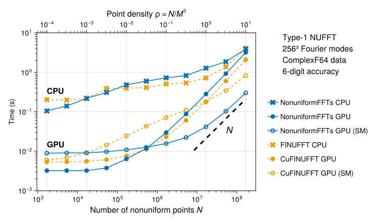
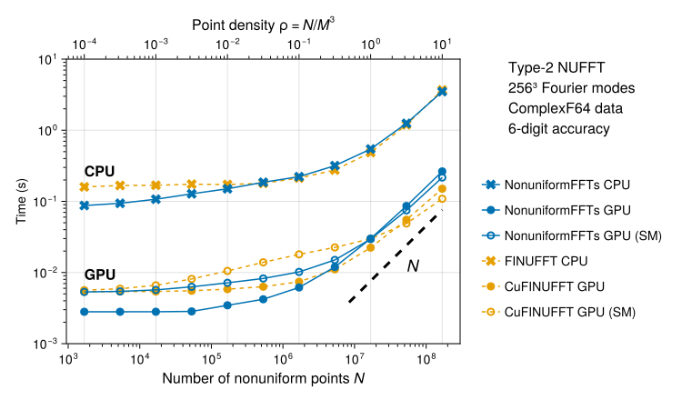
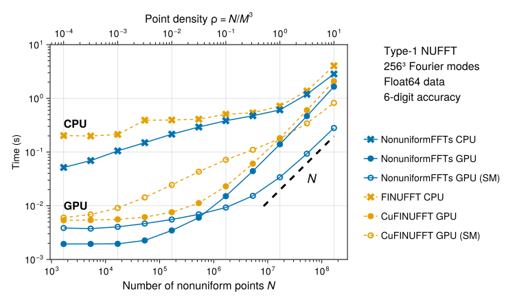
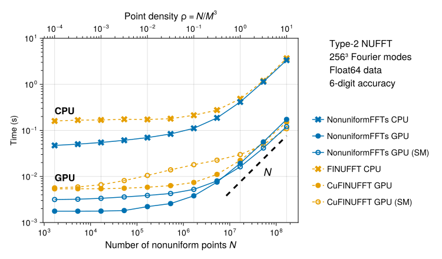
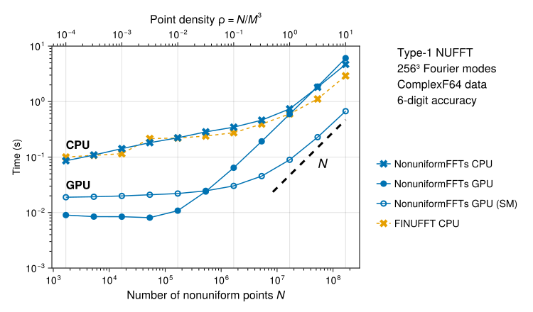
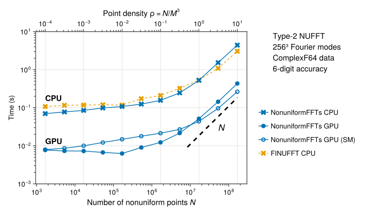
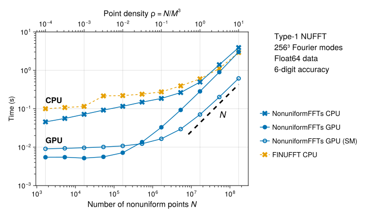
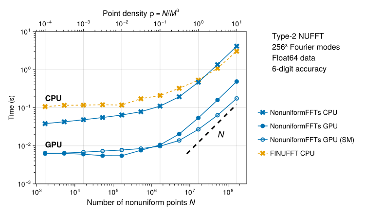

Benchmarks
Introduction
The benchmarks consist in type-1 and type-2 NUFFTs on a uniform 3D grid of fixed dimensions $M^3 = 256^3$ (excluding oversampling). We vary the number of non-uniform points $N$, so that the point density $ρ = N / M^3$ takes values between $10^{-4}$ (very few points) and $10^1$ (very dense). Points are randomly located in $[0, 2π)^3$ using a uniform distribution. The relative tolerance is fixed to $10^{-6}$. In NonuniformFFTs.jl, this can be achieved with the parameters σ = 1.5 (oversampling factor) and m = HalfSupport(4) (see Accuracy). All tests are run in double precision (Float64 or ComplexF64 non-uniform data).
CPU + CUDA (H100)
The following tests were run on the Jean–Zay supercomputer (IDRIS, CNRS). We run on a compute node equipped with 2 Intel Xeon Platinum 8468 CPUs (96 cores per node) and 4 Nvidia H100 SXM5 80 GB GPUs. We only used 1/4 of the node, meaning a single GPU and 24 CPU cores.
The benchmarks compare NonuniformFFTs.jl v0.8.3 (11/07/2025) and FINUFFT v2.4.1 (CPU and GPU; see FINUFFT set-up for details).
Each reported time includes (1) the time spent processing non-uniform points (set_points! / (cu)finufft_setpts!) and (2) the time spent on the actual transform (exec_type{1,2}! / (cu)finufft_exec!).
The script used for benchmarking can be found in benchmark/CPU+CUDA/run_benchmarks.jl.
Complex non-uniform data
Libraries like FINUFFT or NFFT.jl only support complex non-uniform data. Therefore, these tests provide a direct comparison of the performance of different libraries. On the CPU (crosses), the performance of the multi-threaded NonuniformFFTs.jl (blue) and FINUFFT (orange) implementations is quite comparable over a wide range of problem sizes.
On the GPU, we test two different implementations which are heavily inspired by the CuFINUFFT paper (Shih et al., 2021). The default one (filled circles) corresponds to setting gpu_method = :global_memory in PlanNUFFT. This method is slightly faster than CuFINUFFT at low point densities, but slightly slower at large ones.
In fact, at large densities it actually faster to use the non-default gpu_method = :shared_memory option (open circles, labelled "SM" in the figures). The :shared_memory method performs some operations on GPU shared memory (also called local data share), which is small but much faster than the GPU's global memory. During spreading (type-1 transforms), this approach allows to reduce the number of atomic operations performed in global memory. Our implementation is inspired by the CuFINUFFT one (Shih et al., 2021) with a few differences. In particular, we completely avoid atomic operations on shared memory, which seems to speed up things quite a bit and might explain the important gains with respect to the CuFINUFFT implementation.[1] We also provide a shared-memory implementation of type-2 transforms (interpolation). As seen below, this can enable some minor gains at large point densities.
Type-1 transforms
Type-2 transforms
Real non-uniform data
These tests are of interest for applications where non-uniform data is real-valued (imaginary part is zero). In NonuniformFFTs.jl, this enables the use of real-to-complex (type-1) and complex-to-real (type-2) FFTs and also allows to halve the amount of data processed during the spreading (type-1) and interpolation (type-2) procedures. The benchmarks showcase the important gains which can be obtained by using real-data transforms, which are not available in other libraries like FINUFFT or NFFT.jl.
In the plots below, the (Cu)FINUFFT curves are exactly the same as in the complex-data benchmarks.
Type-1 transforms
Type-2 transforms
FINUFFT set-up
We used FINUFFT via its Julia wrapper FINUFFT.jl v3.4.0. For performance reasons, the (Cu)FINUFFT libraries were compiled locally and the FINUFFT.jl sources were modified accordingly as described here. FINUFFT was compiled using Nvidia's nvc++ CPU compiler using CMake with its default flags in Release mode. For CuFINUFFT, we set CMAKE_CUDA_ARCHITECTURES=90 (for an NVIDIA H100) and used the nvcc compiler included in CUDA 12.8.
All FINUFFT benchmarks were run with relative tolerance 1e-6. Moreover, the following options were used:
modeord = 1(use FFTW ordering, for consistency with NonuniformFFTs)spread_sort = 1(enable point sorting in CPU plans)spread_kerevalmeth = 1(use the recommended piecewise polynomial evaluation)fftw = FFTW.ESTIMATE(CPU plans)
and for GPU plans:
gpu_sort = 1(enable point sorting)gpu_kerevalmeth = 1(use piecewise polynomial evaluation)gpu_method = 1(global memory method, "non-uniform points driven")
We also tried gpu_method = 2 (open symbols, labelled SM) which seems to be considerably slower in nearly all cases (in three dimensions, at the requested tolerance).
CPU + AMDGPU (MI300A)
NonuniformFFTs.jl also runs on other GPU platforms such as AMD GPUs. The following tests were run on the Adastra supercomputer (CINES). We run on a compute node equipped with 4 AMD Instinct MI300A accelerators. Each card comes with 24 CPU cores and a GPU. We only used 1/4 of the node, meaning a single MI300A card.
The benchmarks compare NonuniformFFTs.jl v0.8.3 (11/07/2025) and FINUFFT v2.4.1 (CPU only, using Cray compilers).
Each reported time includes (1) the time spent processing non-uniform points (set_points! / (cu)finufft_setpts!) and (2) the time spent on the actual transform (exec_type{1,2}! / (cu)finufft_exec!).
The script used for benchmarking can be found in benchmark/CPU+AMDGPU/run_benchmarks.jl.
The CPU tests shown below used the use_atomics = true option of PlanNUFFT, as the alternative really degraded performance of type-1 transforms in that machine. Full results with the two variants are available in this directory.
As can be seen below, compared to CUDA, on AMDGPU the gpu_method = :shared_memory (SM) option becomes faster than the default at relatively low point densities, while the default :global_memory option scales very poorly for a large number of points. This is something to take into account when using NonuniformFFTs.jl on AMD GPUs.
Complex non-uniform data
Type-1 transforms
Type-2 transforms
Real non-uniform data
Type-1 transforms
Type-2 transforms
- 1The CuFINUFFT shared-memory implementation might perform better (relative to the global-memory method) for two-dimensional or low-accuracy problems.